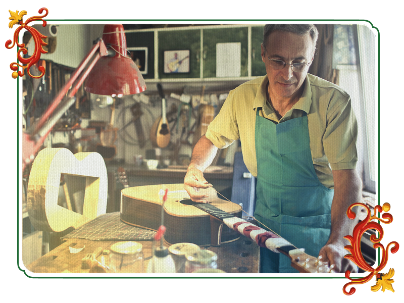
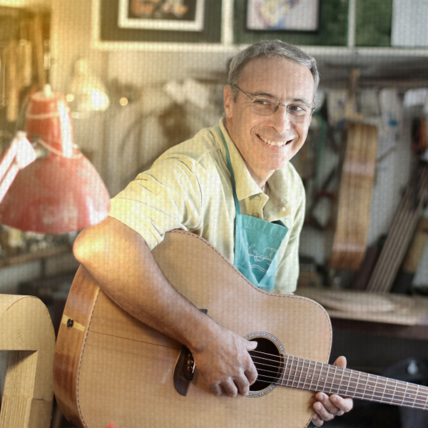
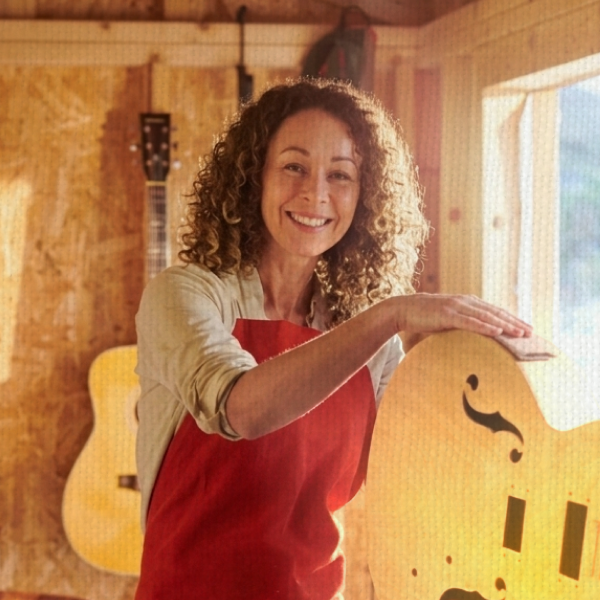
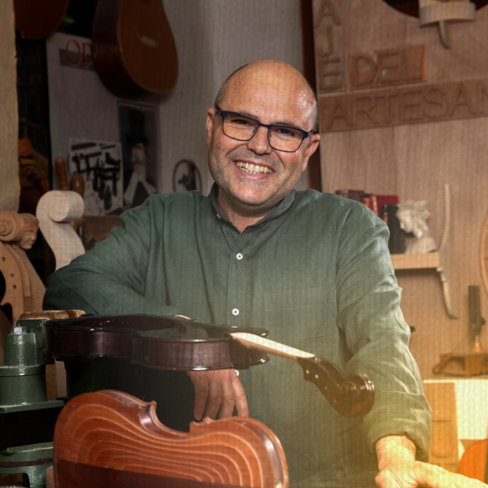
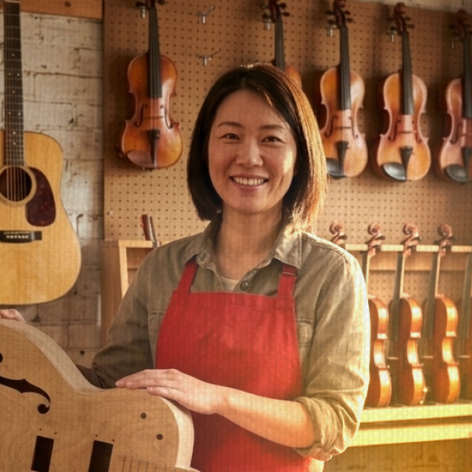

Luthería de Guitarra Criolla
Aprendé a construir una guitarra criolla desde cero, explorando el oficio, las maderas y las técnicas tradicionales de la luthería artesanal.
InscribirmeModalidad
Presencial
Clases
5 encuentros
Horario
Sábados 10–13 hs
Cupos
Máx. 6 personas
Descubrí el recorrido detrás de cada instrumento
A lo largo de cinco etapas vas a recorrer el proceso completo de construcción de una guitarra criolla, incorporando técnicas, materiales y conocimientos propios de la luthería.

Descubrir el oficio
Historia de la guitarra criolla, herramientas básicas, seguridad y planificación del proyecto.
Elegir la madera
Tipos de maderas, vetas, propiedades acústicas y selección de piezas para cada parte del instrumento.
Construir el instrumento
Construcción de tapa, fondo y aros, ensamblado del mástil, encolados y unión de piezas principales.
Perfeccionar cada detalle
Trabajo sobre diapasón, trastes, lijado, barnizado, acabados y colocación de herrajes.
Escuchar el primer acorde
Calibración final, ajuste de cuerdas, afinación, prueba sonora y puesta a punto del instrumento.
Trastes Team
Nuestro equipo

Ricardo Ferreyra
Maestro Luthier · FundadorMás de 30 años dedicados a la construcción y restauración de instrumentos de cuerda. Su experiencia y pasión por el oficio son el corazón de Trastes.

Martina Acosta
Luthier · Construcción ArtesanalEspecializada en la fabricación de guitarras criollas y acústicas. Acompaña cada etapa del proceso, desde la selección de las maderas hasta las terminaciones finales.

Tomás Roldán
Restauración y CalibraciónResponsable de devolver la vida a instrumentos con historia. Se especializa en reparaciones estructurales, calibración y mantenimiento profesional.

Sofía Benítez
Docente de LutheríaGuía a los alumnos durante los talleres compartiendo técnicas tradicionales y conocimientos adquiridos a lo largo de años de práctica artesanal.
Información útil
Todo lo que necesitás saber antes de sumarte al taller
¿Necesito tener experiencia previa?
No. Contamos con talleres para distintos niveles, desde quienes dan sus primeros pasos hasta personas con experiencia que desean perfeccionar su técnica.
¿Los materiales están incluidos?
Cada taller tiene requisitos diferentes. En la mayoría de los casos brindamos una lista de materiales recomendados antes del inicio, y durante la cursada contamos con herramientas disponibles para trabajar.
¿Cuánto dura cada taller?
La duración varía según el curso elegido. Antes de comenzar recibirás toda la información sobre la cantidad de encuentros, horarios y modalidad.
¿Puedo restaurar mi propio instrumento?
Sí. En el taller de restauración trabajamos sobre instrumentos reales, evaluando cada caso para definir el mejor proceso de reparación y conservación.
¿Qué tipo de instrumentos construyen?
Nos especializamos en instrumentos de cuerda, principalmente guitarras criollas y acústicas, utilizando maderas cuidadosamente seleccionadas y técnicas tradicionales de luthería.
¿Cómo puedo inscribirme?
Podés comunicarte con nosotros desde el formulario de contacto o por WhatsApp. Te asesoraremos sobre el taller que mejor se adapte a tu experiencia e intereses.
Hablemos de tu próximo instrumento
Escribinos para consultar por talleres, restauraciones o instrumentos a medida. En Trastes, cada proyecto empieza con una charla.
Buenos Aires, Argentina
contacto@trastes.com
+54 9 11 4567-8920